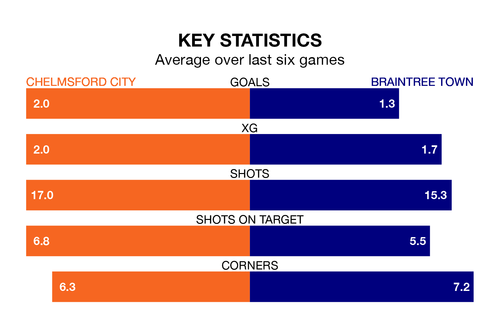

The National League South's two meanest defences go head-to-head at the EMG Inspire Stadium on Saturday, when Braintree Town visit Chelmsford City.
No teams have conceded fewer goals than Braintree to date: the away side have let in just 42 goals in 46 games.
Chelmsford have conceded 43 goals in 46 games, giving them the second tightest back line so far this season.
Key to the Iron's home form has been another, who has allowed 0.73 goals past him per 90 minutes, compared to 0.65 for another in the opposite net.
Chelmsford are second in the table after 46 games, of which they have won 24 and drawn 12, earning 84 points.
Braintree are three places behind City in fifth, with 23 wins and 12 draws putting them on 81 points.
In the last 10 years, Chelmsford and Braintree have played each other on 11 occasions. Chelmsford won seven of them and they drew four times.
On average, Chelmsford scored 2.6 goals and the Iron 1.1 in those matches.
Their last meeting was on January 1, when Chelmsford won 3-0 at home.
The hosts are in reasonable form in the National League South, with three wins and two draws from their last six games.
With four wins and a draw over that period, Town's form is slightly better – they have taken 13 points from 18, compared to Chelmsford's 11.
Chelmsford's last match was on April 20, a 1-1 draw against Chippenham Town.
Braintree beat Bath City 1-0 last time out, on Tuesday.
Updated: 07:59 (UTC), 26/04/24